source("beginner_intro_to_statistics1_functions.r")
source("beginner_intro_to_statistics1_tests.r")1.0.0 - Beginner - Introduction to Statistics
introduction
beginner
probability
data
descriptive statistics
data visualization
inferential statistics
probability notation
joint-probability
distributions
data types
R
econ 325
This notebook introduces you to some fundamental statistics and basic probability concepts. It is designed to cover introductory statistics material taught in Foundations of Mathematics 12 and ECON 226: Making Sense of Economic Data for students who either haven’t taken these courses or who would like a refresher before going into ECON 325.
Outline
Prerequisites:
This notebook uses the Jupyter system, which is a connected system of open-source tools designed to support interactive, web-based computing. This system allows you to run cells of code, answer questions and apply your learning as you go. To familiarize yourself with the Jupyter environment, please check out the following resources before continuing with this lesson.
Introduction to Jupyter
Additional resources for familiarizing yourself with the Jupyter:
Learning Objectives
- Describe the probability of an event, using accurate terms
- Understand how to read basic probability notations
- Calculate the theoretical and experimental probability
- Describe and apply the fundamental rules of counting
- Gain familiarity with data types and their functions
- Identify common data visualizations and their uses
- Interpret regression equations and apply a regression to real-world examples
- Describe the connection between probability and statistical inferences
References
- Appleby & Ranieri - iWrite Math 12: Foundations of Math, British Columbia Edition
- Timbers, Campbell, and Lee - Chapter 10: Statistical Inference
- De Veaux, Velleman, and Bock - Intro Stats
- Illowsky and Dean - Chapter 12: Linear Regression and Correlation
Before beginning the lesson, please run the below cell.
PART 1: PROBABILITY
Probability is an area of study that deals with the mathematics of chance or prediction. This lesson is designed to prime you with some basic, introductory concepts that are essential for understanding both statistics and probability.
Material Covered:
Random events
Formal probability (terminology and notation)
Calculating theoretical and experimental probability
Unions, intersections, conditional probability and independence
Models for probability
To begin, let’s familiarize ourselves with some of the basic terms used in the study of probability.
- Random: an situation is random if we know the possible results it can have, but not which particular result has or will occur.
- Trial: a single occasion where we observe a random situation. Since the situation is random, the result of the trial cannot be predicted with certainty
- Outcome: the result measured or reported from the trial
- Sample space: all possible outcomes for a trial
- Event: a group of one or more outcomes in a sample space
- Probability notation: a formal notation method of efficiently conveying probability concepts
Although these may seem like abstract concepts, the reality is that we encounter these concepts in our lives on a daily basis.
Think about rolling a standard, six-sided die.

{kind=link}
- Rolling the die would be considered the trial in this example, which could result in six distinct outcomes based on which side of the die is facing up: 1,2,3,4,5,6.
- To help differentiate the outcomes from other mathematical objects, we can use probability notation and list all possible outcomes within curly brackets, separated by commas: {1,2,3,4,5,6}.
- This list of outcomes makes up the sample space.
- We could also group our outcomes into events, such as ‘rolling an even number’ or ‘rolling an odd number’.
We can think about probability in terms of likelihood, which means how “likely” an event is. If we are familiar with the circumstances surrounding an event (the trial, outcome(s), and sample space) we are able to understand the likelihood of an event. For each event, there is both a theoretical and experimental probability1. The theoretical probability can be calculated as follows:
Where is the probability notation which describes the probability of event occurring.
When you toss a die, there is a theoretical probability for each event possible, which depends on the outcomes which make up the event.
E.g = number of outcomes of rolling an odd number, which is three (rolling a one, a three, or a five), divided by the total possible outcomes which we know to be six. Therefore, .
By these kinds of calculations, we can assign a numerical value between 0 and 1 to the likelihood of an event occurring.
So, if you roll a die ten times, are you guaranteed to roll five even numbers and five odd numbers? Not necessarily; however, if you were to conduct these trials and record your results you could calculate the experimental probability.
Experimental probability is calculated on the basis of events that occurred, whereas theoretical probability is based purely on mathematical reasoning.
With a small number of trials, there may be large differences in these two values. It’s conceivable that if you rolled a die four times, you could get an even number every time, making . That’s very different from the value of that we calculated earlier.
What if you rolled a thousand times, though? Intuitively, you might already have realized that the more times we repeat this random process, the more likely it is that the experimental probability of our event of interest will settle towards its expected probability.
Question 1: True or False? The combined probability of all outcomes in a sample space will always be equal to 1. Try it with the dice example!
answer_1 <- '' # your answer here('true' or 'false')
test_1()So we now know how to calculate the probability that an event will occur. What about the probability that it will not occur? This is called the complementary event.
In a situation where there are only two possible outcomes, the complementary event is relatively straightforward. Consider a coin toss; what is the complement of the event “lands on heads”? If you’re thinking “lands on tails”, you would be partially right. The complementary event would really be “does not land on heads”. Since there’s only two outcomes in the sample space, then “lands on tails” is the only way to achieve the complementary event in this example.
However, this changes when there are more possible outcomes – like rolling a six-sided die. Now, the probability of the complement to “rolling a one” is the combined probability of rolling a two, three, four, five, or six.
Case Study
To better understand these ideas, we will use a case study: salmon fishing in British Columbia.
In BC, salmon are an important economic resource both for commercial sales and personal consumption. They also are a source of livelihood and with high cultural significance for some communities. They play a major role as a keystone species in coastal ecosystems for their critical place in the food chain and significant contributions to nutrient cycling throughout their life cycles, which keep the surrounding streams, trees, and soils healthy. Given their importance, there is a need to maintain strong records of populations to inform decisions about fishing regulations and habitat protections in order to maintain strong salmon populations.
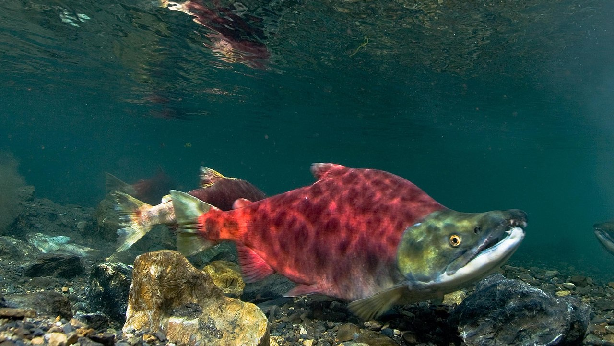
{kind=link}
Imagine you’re out fishing for salmon. Each time you cast out your line, there are five possible types of salmon it may come up with: Sockeye, Chum, Coho, Chinook, and Pink. For the following questions, assume that each type of salmon is equally likely to bite your fishing rod.
Question 2: What is the theoretical probability of catching a Coho salmon? Please give your answer to two decimal places.
answer_2 <- # your answer here
test_2()Despite the integral role of salmon in supporting BC’s coastal ecosystems and communities, data show that many salmon populations are declining due to pressures from climate change, habitat loss and pollution, and fishing. As part of its response, the department of Fisheries and Oceans Canada restricts the type and size of fish commercial fishers are allowed to catch and retain. Off the coast of Salt Spring Island, for example, it is not permitted to catch and take home any Coho, Chinook, or Sockeye salmon.
Question 3: Suppose you are fishing off Saltspring Island. With this regulation in effect, what is the theoretical probability of catching a salmon that you can take home with you?
answer_3 <- # your answer here
test_3()Question 4: What is the theoretical probability of the complementary event? Please give your answer to two decimal places.
answer_4 <- # your answer here
test_4()Events, Relationships, and Probability Notation
We’ll consider catching a salmon we can take home event (Chum, Pink), and catching one that we cannot take home (Chinook, Sockeye, or Coho) event . We would denote their probabilities as and respectively. We could also write them as and , since these are complementary events.
In this case, and are mutually exclusive events, meaning that they have no common outcomes. In any of the possible outcomes of what salmon you catch, either event or event will occur, but never both and at the same time. This is the case with all sets of events which are complementary events, as there are no common outcomes.
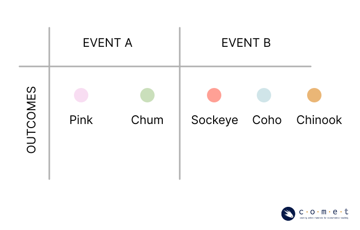
Suppose you’re allowed to take home Chum and Pink salmon, but you only enjoy eating Sockeye, Coho, and Pink salmon. We’ll consider catching a salmon you are allowed to take home as event , and catching a salmon you want to take home event . These events are not mutually exclusive. They each have an individual probability of occurring, as well as a joint probability of both events occurring.
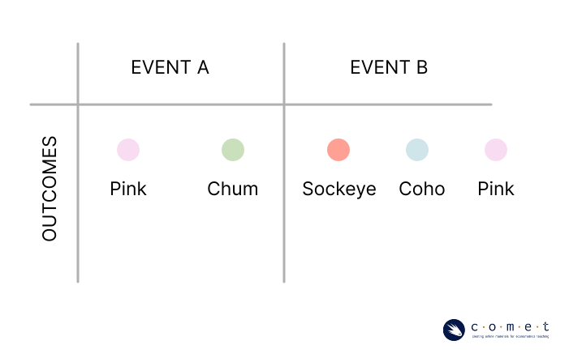
We can use probability notation when exploring the joint-probability of two events (,). In probability notation, the symbol is used to express an intersection as follows:
This intersection is the joint-probability, or the probability of both event and occurring. The event occurs only when both and occur simultaneously. There is only an intersection when the events are not mutually exclusive.
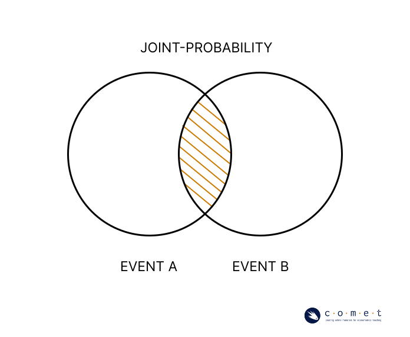
To calculate the probability of the intersection, we need to calculate and combine the probability of all outcomes that are included in both events.
Question 5: If catching a Pink or Chum salmon is event , and catching a Pink, Sockeye, or Coho salmon is event , what is ? Assume that your sample space includes all five species of salmon, and that each is equally likely to be caught. Please give your answer to one decimal place.
answer_5 <- # your answer here
test_5()We can also use a similar notation to express a union:
Event occurs if either or or both occur. This can happen regardless of whether and are mutually exclusive.
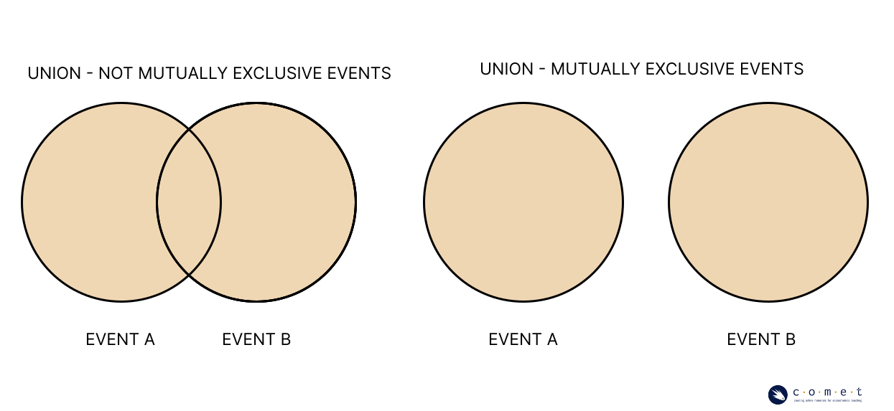
In calculating the probability of a union, however, it does matter if the events are mutually exclusive. If and are mutually exclusive, then:
If and are not mutually exclusive, then:
The joint probability is subtracted to avoid “double-counting” the area of overlap between and .
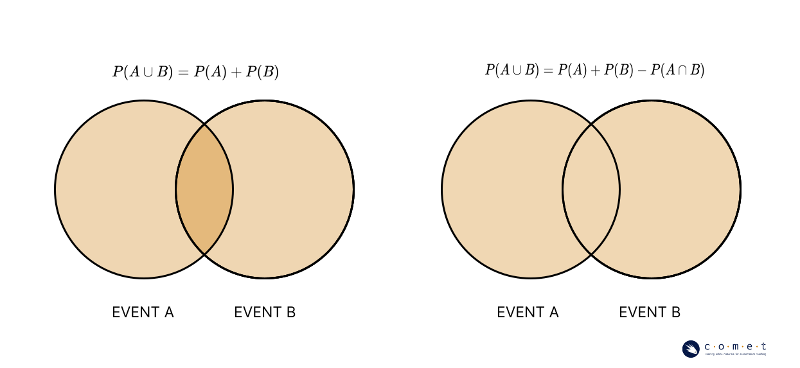
Question 6: If catching a Pink or Chum salmon is event , and catching a Pink, Sockeye, or Coho salmon is event , what is ? Assume that your sample space includes all five species of salmon, and that each is equally likely to be caught. Please give your answer to one decimal place.
answer_6 <- # your answer here
test_6()Conditional Probability and Independence
If you toss a coin and it lands on heads, the probabilities of the outcomes for your next coin flip remain unchanged. This is because tossing a coin is an independent event. Even though we are expecting an approximately equal number of heads and tails outcomes from the total number of tosses we perform, we know that the outcome of our toss has no power to dictate the following coin toss.
Let’s return to our fishing example. Say you cast out your line once and catch a Chinook salmon, put it in your boat, then you cast out your line again. Has the probability of your outcome changed because you caught a Chinook salmon? What about if you had put the Chinook back in the water after you’d caught it?
It might be challenging to conceptualize how these events would impact each other in such a large body of water like the ocean. Think about how this would work if instead we had a pond, with only a few salmon.
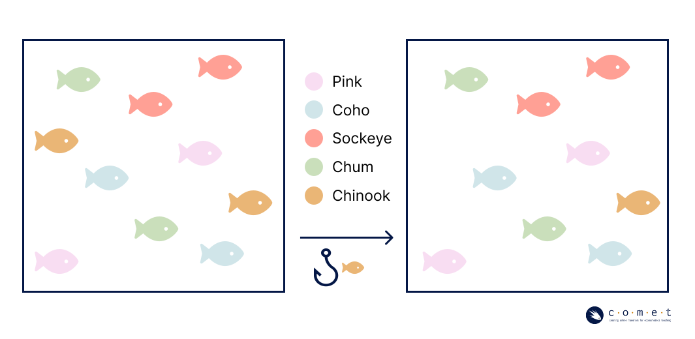
You can easily see now how removing a fish from the pond after you catch it would affect the probability of the next fish you catch. In this case, the succession of trials would not be independent.
Conditional probability allows us to understand the probability of events as they relate to the probability of other events.
See the below contingency table showing some sample data that could have been collected about salmon caught in a certain region.
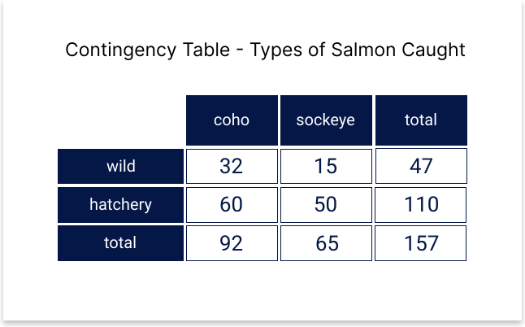
Take a minute to familiarize yourself with the table. In total there were 157 salmon caught in the sampling period. One hundred and ten of them were hatchery salmon, forty-seven were wild. Sixty-five of them were Sockeye, ninety-two of them were Coho, and wild and hatchery fish were represented for both species in different amounts, as you can see from the values in the middle of the table.
You are able to easily see that the probability of catching a wild salmon is . Would this probability change if we knew that we were only going to catch Coho? You might notice that wild salmon make up a much larger percentage of the Coho, so we would have a higher probability of catching a wild salmon in the case where we know it will be a Coho salmon. This is because we’re now observing a conditional distribution of the sixty-five Coho salmon. This probability is expressed as:
Where would be the event ‘catching a wild salmon’ and would be the event ‘catching a Coho salmon’. then means ‘the probability of catching a wild salmon given that it’s a Coho salmon’. In this case .
Question f: What is the probability of catching a sockeye salmon given that it’s a wild salmon? Please round your answer to two decimal places.
answer_6.1 <- # your answer here
test_6.1()Distributions
In the previous example, we began exploring instances where the probabilities are not equal among the different outcomes. In controlled settings like rolling dice or tossing coins, we can easily see why we would assume equal probability in events- these specific trials have been designed to give no advantage to one outcome or another.
However, for other random events, the probability of outcomes is not equal. When you cast your line into the water, the probability that you will catch a given species of salmon is not going to be equal, and may depend on where you are and the abundance of different salmon species in that area, or any other number of factors. This is a probability distribution which refers to the pattern or arrangement of probabilities in a population.
Over the course of an afternoon, you cast your line out 15 times. If the probabilities of catching each of the five salmon species were equal, your distribution would look like this:
| Salmon | Frequency | Probability |
|---|---|---|
| Pink | 3 | 1/5 |
| Sockeye | 3 | 1/5 |
| Chum | 3 | 1/5 |
| Coho | 3 | 1/5 |
| Chinook | 3 | 1/5 |
But experimentally, that’s not what happens. Instead you find somethings like this:
| Salmon | Frequency | Probability |
|---|---|---|
| Pink | 2 | 2/15 |
| Sockeye | 1 | 1/15 |
| Chum | 4 | 4/15 |
| Coho | 7 | 7/15 |
| Chinook | 0 | 0 |
Note that the probabilities still total 1.
Distributions are usually described as functions: the function takes in a possible event, then reports back the probability of that event occurring.
Probability Models
One helpful tool to help understand this better is the use of probability models, which is a mathematical description of an experiment. Using probability models, we can use our understanding of probabilities to predict random behaviour.
The below table displays a sample probability distribution for the number of fish caught in a day.
| Outcome (number of fish) | Probability |
|---|---|
| 0 | 0.15 |
| 1 | 0.23 |
| 2 | 0.28 |
| 3 | 0.22 |
| 4 | 0.12 |
Given these probabilities, how many fish can we expect to catch on a day out? While there is no way of knowing exactly what will happen on a given day, we can figure out what to expect by calculating the expected value. The equation to establish this is:
Where is the expected value of random variable , is a particular value that the random variable can take on, and is the probability of that value occurring. In the following example, we will use this equation to determine the answer to our previous question: how many fish can we expect to catch in a day?
So this means that on average, we can expect 1.93 fish to be caught in one day. This doesn’t mean that we certainly will catch this number of fish each day. In fact, as you might have noticed, it isn’t possible to catch a fraction of a fish. This is simply an average.
If we’re fishing for recreational purposes, it may not be as important to know this number. Consider how that might change if fishing is a part of our livelihood. Knowing the number of fish we can expect to catch might then help us to make decisions about how much time we need to spend fishing, or how to price our fish. This is a common application of probability models.
Exercise
Now it’s your turn. The below sample probability distribution shows the average size of different salmon species in BC.
| Salmon | Length (cm) | Probability |
|---|---|---|
| Pink | 51 | 0.27 |
| Sockeye | 68 | 0.55 |
| Chum | 76 | 0.18 |
Question 6.2: What is the expected length in cm of a salmon that you catch? Please give you answer to two decimal places.
answer_6.2 <- # your answer here
test_6.2()PART 2: COUNTING, PERMUTATIONS, AND COMBINATIONS
You may have noticed that the probability of an outcome had a lot to do with the possibilities that existed for a trial. In determining probability, we often will need to know that total number of possible outcomes, and what those outcomes are. To do that, we need to have efficient ways to count them!
Material Covered: * Fundamental counting principles * Calculating permutations with repeated elements * Calculating combinations
Imagine you’re preparing to go on a fishing trip. This could look different for everyone, but below is a list of options for how you might approach different aspects of your trip.
| Transportation | Location | Fishing Method |
|---|---|---|
| Driving | Estuary | Net |
| Walking | River | Weir |
| Rod |
Fishing Weirs: You may or may not be familiar with the term ‘weir’, which is a structure placed across a channel of water to trap fish. In BC, many Indigenous fishers used this technology to not only catch fish, but to collect information on the size of the year’s salmon run, which could inform harvesting practices. Weirs were banned by the Canadian government in an effort of colonization, but in recent years, some coastal communities have been reviving the practice as an effective method to continue monitoring salmon populations.
{kind=link}
How many different ways could we go about this fishing trip if we have to choose just one method at each level? To illustrate this, we’ll draw out our options as a decision tree.
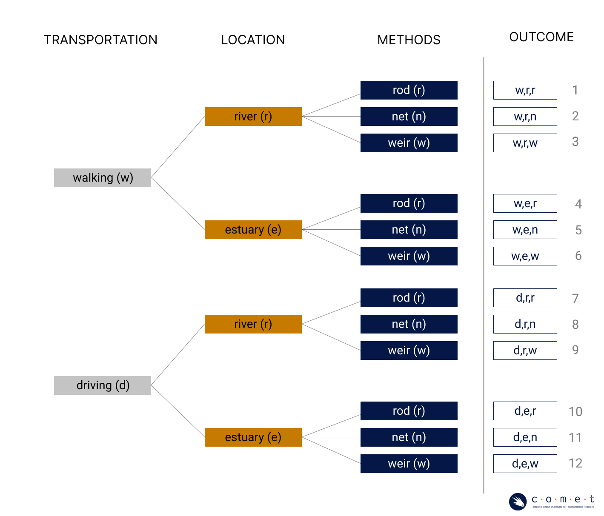
When it’s drawn in a tree format like this, we can simply count up the total number of outcomes. When we don’t want to take the time to draw a diagram, or the numbers are too large to do so, we can also calculate the total outcomes using the fundamental counting principle. By this principle, we know that if there are m choices at the first stage, and n choices at the second stage, then the total number of outcomes is .
We’ll continue to illustrate this with the example of salmon. If we were to catch any five salmon, we can create several different arrangements based on the species of salmon we have caught.
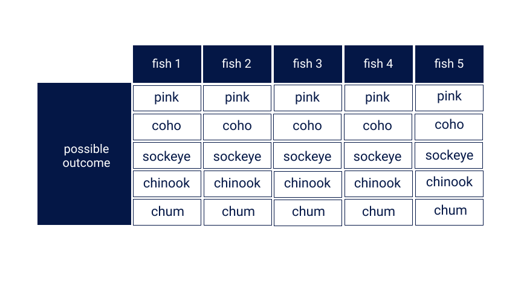
Question 7: Use the fundamental counting principle to calculate how many arrangements you can make using all five fish. Give your answer as a whole number, with no decimals. Hint: the total number of “levels” you have is five, and each species of fish represents a possibility at each level.
answer_7 <- # your answer here
test_7()Now what if our salmon were in a small pond again, and there is only one of each species? This means that at each level, we would have one less possible species to draw than the previous level.
Question 8: If we start with five possible species, how many total arrangements of salmon will we have?
answer_8 <- # your answer here
test_8()In this particular example, we could also write the answer out using factorial notation. Factorial notation expresses a product of all positive integers which lead up to a number. In the below equation, the factorial notation is on the left, expressing the full formula on the right.
This provides us with a way to simplify equations, and becomes important as we continue to build an understanding of counting.
In our previous examples, we were using the fundamental counting rule to calculate the number of arrangements we could generate from a given set of elements (salmon species). In these examples, the order of the elements matters. Catching a Pink salmon as your first fish brings you to a whole new branch of the decision tree than drawing it after catching another fish, and will therefore lead to different outcomes.
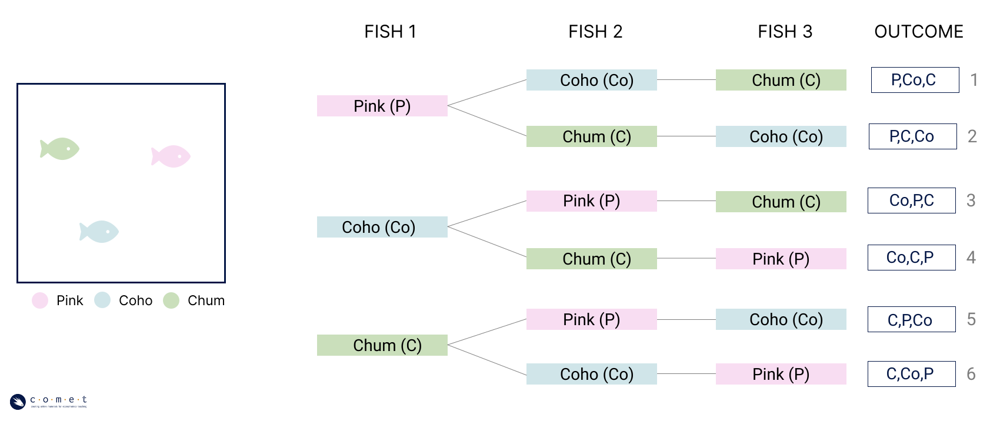
When order is important to the arrangement of elements, it is called a permutation. When you’re using all the possible elements at a time, the number of permutations in a set of elements is equal to . We can see this in the above decision tree. If we were to only have the option of catching Pink, Coho, or Chum salmon (), then our number of permutations would be:
Now, what if we’re calculating how many permutations can be made for just a portion of the available elements? For example, how many permutations of two different salmon can we create from a list of all five salmon?
Just like before when we were calculating all the permutations for catching five fish, at the first level, all five options are available. Then there are four at the next level.
We stop after this because we are only looking for combinations of two.
Question 9: How many permutations of three different salmon can we create from a list of all five salmon?
answer_9 <- # your answer here
test_9()The general rule for counting permutations like this is the below equation:
where is the number of possible different elements (for example, five possible species of salmon) and is the number of elements you’d like in the permutation (for example, permutations of three different salmon).
Note: This equation still holds true when the number of total elements is the same as the number of elements in our permutation. is equal to 1, not 0! When , the bottom of the equation becomes one, so our number of permutations is just equal to , as we determined in previous examples.
In calculating permutations, we assume we will not repeat elements. There is only one Pink salmon in the pond, therefore it can only show up once in our equation. The equation for permutations changes, however, when the number the list of elements contains repetitions.
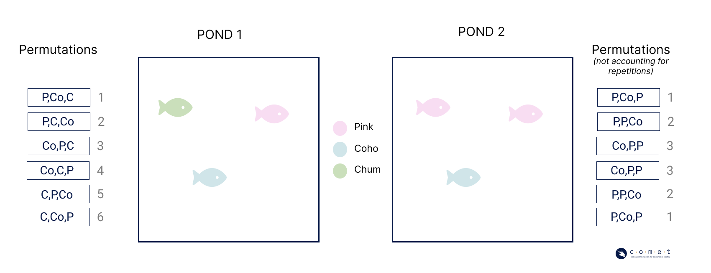
Above are two fish ponds containing different fish, and the associated permutations of three using all the fish in the pond. On the left, there are no repeated species, but on the right, there are two pink salmon. Using our equation without accounting for the repeated species, we would see the same number of permutations for both ponds. Visually, though, we can tell that some of the permutations on the left side have repeated.
To account for repetitions within a list of elements, we use the following equation:
where , , and are the number of repetitions for different elements. In the case of pond 2, we have just one repeating element () with two repetitions. If our list had other elements which have repetitions, they would be included as , , and so on. So we would calculate this as:
Question d: How many permutations could we generate from the following list of elements: Chum, Pink, Pink, Coho, Coho, Sockeye?
answer_10 <- # your answer here
test_10()Through all of these examples, we have been assuming that the order of the species we catch matters. This is explicit to permutations. When determining the number of permutations, catching a Pink salmon and then a Coho salmon is a different outcome than catching a Coho salmon and then a Pink salmon. What about instances where order doesn’t matter? The selection of a set of elements when order is not important is referred to as a combination.
Let’s think back to our original pond, where we have one of each salmon species, for a total of five salmon. When we calculated all of the possible permutations for the order in which we catch the salmon, we had a very high number. How would this number change when we are trying to calculate the possible combinations? If you have exactly five different fish, how many total combinations of five fish can you think of?
You can probably see that although the number of permutations is very high, in this case there is only one combination of fish species. This is because the number of combinations from a list of elements can be expressed as:
where is the number of combinations, is the number of possible different elements, and is the number of elements which are being taken at a time in the combination or permutation.
Question 11: Earlier we calculated the number of permutations of three different salmon we could make from a list of all five salmon. How many combinations of three could we make from a list of all five salmon?
answer_11 <- # your answer here
test_11()PART 3: DATA
Now that we have an understanding of counting and probability, we can begin diving into one of the most important elements of good statistics: data.
Material Covered:
Key components of data
Variables
Types of data
Basic data visualization
Describing data through central tendency
As our modern world continues to push forward technologically through innovations in AI, modeling, algorithms, and personalized digital advertising, you may be hearing lots about data in the world around you at the moment. But what are data? Very broadly, data is information that has been collected for some purpose or another.
Below are some helpful definitions to understand data:
- Dataset: a structured collection of numbers and characters.
- Variable: a characteristic, number, or quantity that can be measured.
- Observation: all of the measurements for a given entity.
- Value: a single measurement of a single variable for a given entity.
Data can be structured into datasets in many ways, but most commonly will be presented as tabular data.
salmon_data <- read.csv("datasets/salmon_data.csv") #load the salmon datahead(salmon_data) # run this cell to view some tabular data!In the above example, the rows represent observations. In this case, each fish caught represents a unique observation. The columns, meanwhile, are the variables in this dataset. Each observation has a value assigned in each variable. The variables are what hold information about the same characteristic (species, size, etc.) for all the observations.
Variable Types:
The type of characteristic and the way that it is recorded will change the way that we can use a variable within a dataset. For example, suppose we have a survey which asks participants the following questions and store the answers in two separate variables.
- Are you concerned about the state of salmon stocks in BC (yes or no)
- How much salmon do you consume in a year _________ (grams)
To report the data values you collected for question 1, it may make sense ‘#/% of respondents are concerned about the state of salmon stocks in BC’, but would the same approach work for the second question?
Similarly, you may be able to calculate an average number of grams of salmon consumed per person based on the data collected from the second question, but no such calculation could be done for the data from the first question.
This is because the data collected from these two questions are fundamentally different types of data, and therefore have fundamentally different ways of being reported, used, and interpreted.
Variables which contain information on what group or category an individual (observation) belongs to are referred to as qualitative variables, or sometimes categorical or nominal variables. Qualitative data generally answer descriptive questions (what, where, how) and often take the form of text responses - like question 1 in our example.
By nature of being qualitative, these types of data are more limited in their applications, but be aware: just because a qualitative variable is more limited in its application does not necessarily make it less useful or informative.
Quantitative variables, meanwhile, contain numerical data which express a measurable quality of the observations. In addition to the numeric values, these variables are described using a form of measurement units —for example, centimeters, kilometers per hour, or degrees Celsius— which provide meaning to the numeric data by indicating the scale of measurement.
Within quantitative variables, there are important distinctions. Think back to our probability model data, where we explored the mean expected value for the number of salmon we would catch in a day. The data from which this probability model was drawn would have recorded a numeric value, with salmon as the measurement unit, and is therefore quantitative data.
However, there is a limitation on the values that this response could take on in that it is only possible to catch a whole fish at a time. This quantitative variable is therefore a discrete variable, as we can list all possible outcomes. Conversely, the variable that would have recorded the length of the fish was not limited in this way. A salmon could be any fraction of a centimeter in length, and the number of values that the variable could take on is limited only by the precision of our measuring tools. This type of quantitative variable is called a continuous variable.
Keep in mind that just because a variable is recorded as a number does not necessarily mean it is a quantitative variable. In some cases, qualitative variables may be labeled using numerals, or converted to numbers for ease of management, but they are still at their core recording categories of the observations.
In other cases, qualitative data is collected using a scale. For example, a survey may ask you to rate an experience on a scale from one to ten. Although the value assigned is a numeric response, it is still qualitative data, as this scale is a unitless creation, which has no set distances between values. The responses on the scale cannot therefore be interpreted numerically, but is still useful as a way of categorizing the way that participants felt about an experience. This particular type of variable is referred to as an ordinal variable.
Below is a list of sample variables that could be collected.
| Variable | |
|---|---|
| 1 | driving speed, in kilometers/hour |
| 2 | the recorded hair color of an individual |
| 3 | the number of bedrooms in a house |
| 4 | an individual’s perceived understanding of a topic, rated on a scale from 1-10 |
| 5 | the banking institution of an individual |
| 6 | amount of fertilizer applied to a field, measured in kilograms per hectare |
| 7 | number of clients served at a business in a day |
| 8 | numerical area code of a surveyed group |
Question #12: Which of the above variables are continuous quantitative variables. Please list all applicable, separated by commas, in ascending order
answer_12 <- '' #your answer here ('1,2,3..')
test_12 ()Question 13: Which of the above variables are qualitative variables? Please list all applicable, separated by commas**
answer_13 <- '...' #your answer here ('1,2,3..')
test_13()Data Types
There are many different types of data, which depend on the kinds of values stored in the variables.
Cross-sectional data are data which present information on multiple observations at a single moment in time.
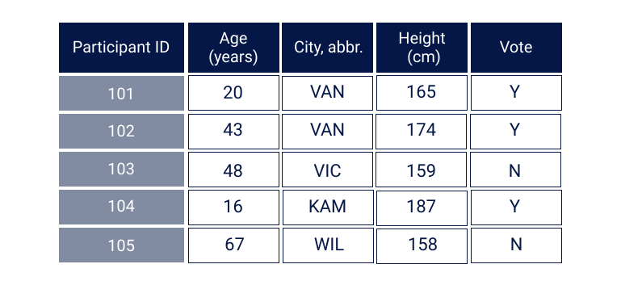
Time series data are data which contain values for a single individual over time. For example, the below table shows the changes over time to a single salmon stock.
head(population_data)Panel data are data which contain values for multiple observations over time.
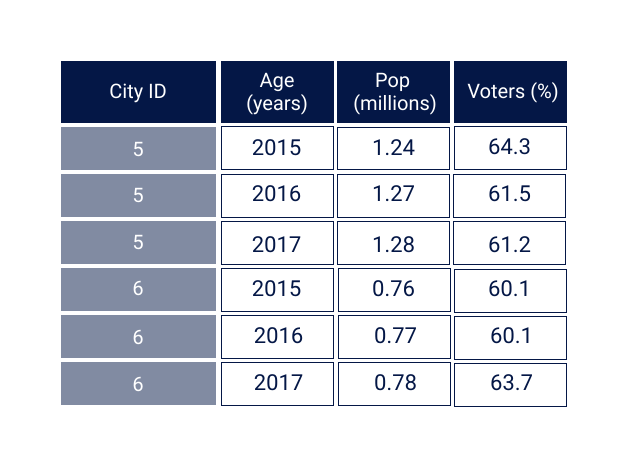
Think Deeper: There are lots of data being collected, made available, and strategically presented from a variety of different sources. When interpreting data, you’ll need to be exercising your information literacy skills, and making sure that you’re critically examining the source of the dataset. You may want to ask yourself questions like: who created this dataset, what interest do they have in this information, and how was this information collected?
Data Visualizations
One common way of beginning to understand the data is through data visualization. Good data visualizations should always answer a well-thought-out and relevant research question. Good data visualization should also exist as a standalone explanation - that is, it should provide readers with a clear understanding of both the research question at hand and its answer in a way that doesn’t require further explanation.
| Quality | |
|---|---|
| 1 | use design features to manipulate readers into believing a particular narrative of the data |
| 2 | remember that a visualization’s accuracy is only as good as the data is |
| 3 | use data visualization to tell the story of the data truthfully |
| 4 | label your axes in font sizes that are readable and use descriptive titles |
| 5 | choose colours that are very similar each other when trying to distinguish 2 variables |
Question 14: From the above list of qualities, which do you think you should keep in mind as good practices when creating visualizations? Please list selected answers in ascending order, separated by commas.
answer_14 <- '...' # your answer here ('1,2,3..')
test_14()There are many different kinds of visualizations, but we’ll just focus on some of the most common types.
#run this cell to install and load necessary packages for this tutorial
#install.packages("tidyverse") #if you have never previously installed ggplot, remove the first `#` mark.
library(tidyverse)
#warning messages are okay, if you get an error message saying "could not find function ggplot" or "object scatter not found" you probably need to install tidyverse using the line aboveA scatter plot visualizes the relationship between two quantitative variables
This plot works great when we are interested in showing relationships and groupings among variables from relatively large datasets
scatter <- ggplot(data = salmon_data, aes(x = length, y = mass, color = species))+
labs(x ="length of fish (cm)",
y = "mass of fish (kg)",
title = "Mass and Length of Salmon, by Species")+
scale_x_continuous() +
theme (
plot.title = element_text(size = 24),
axis.title = element_text(size = 18),
axis.text = element_text(size = 16),
legend.text = element_text(size = 14),
legend.title = element_text(size = 16)) +
theme(aspect.ratio = 1.5
)
scatter + geom_point(pch = 19, cex = 2.6) + scale_color_brewer(palette="Set2")
scatterA line plot visualizes trends with respect to an independent, ordered quantity (e.g., time).
This plot works great when one of our variables is ordinal (time-like) or when we want to display multiple series on a common timeline.
line <- ggplot(data = population_data, aes(x = year, y = run_size, color = region))+
labs(x ="Year",
y = "Run Size (conservation units)",
title = "Chinook Salmon Yearly Run Size, by Region") +
theme (
plot.title = element_text(size = 14),
axis.title = element_text(size = 14),
axis.text = element_text(size = 12),
legend.text = element_text(size = 8),
legend.title = element_text(size = 12))
line + geom_line(size = 1.5) + scale_color_brewer(palette="Accent")
lineA bar plot visualizes comparisons of amounts.
This plot works great when we are interested in comparing a few categories as parts of a whole, or across time.
bar <- ggplot(data = salmon_data, aes(species, fill = species))+
labs(x ="Salmon Species",
y = "Count",
title = "Count of Salmon by Species") +
theme (
plot.title = element_text(size = 24),
axis.title = element_text(size = 18),
axis.text = element_text(size = 16)
)
bar + geom_bar() + scale_fill_manual(values = c("#EAB676","#CADFBB","#D0E5E9","#F8DDF2","#FFA095"))
barA histogram visualizes the distribution of one quantitative variable
This plot works great when we are working with a discrete variable and are interested in visualizing all its possible values and how often they occur. They can also be used for continuous variables as in the below graph.
histogram <- ggplot(data = salmon_data, aes(length)) +
labs(x ="Salmon Length (cm)",
y = "Count",
title = "Length of Salmon") +
theme (
plot.title = element_text(size = 24),
axis.title = element_text(size = 18),
axis.text = element_text(size = 16)
)
histogram + geom_histogram(fill = "darkseagreen3", color = "darkseagreen4", binwidth = 5)
histogramSummary Statistics and Central Tendency
Importantly, data also allows us to explore statistics, which is the field of mathematics that is concerned with the analysis and manipulation of data. There are a number of different analyses within statistics that each play a role in interpreting data and driving decisions. One common way of using data is the computation of summary statistics, which are statistics that describe the general behaviour of variables.
Central Tendency - Mean
In statistics, central tendency refers to the idea of how different interpretations of the term “middle” can be used to describe a probability distribution or dataset. In this notebook, we’ll think about central tendency in terms of numerical values which describe a given subset of the dataset. This concept is important because we often deal with incredibly large datasets that are too big to describe in their entirety.
The first, and most referenced measure of central tendency is the sample mean (also referred to as the arithmetic mean). The mean of a variable is the average value of that variable, which can be found by summing together all values that a variable takes on in a set of observations and dividing by the total number of observations used. This is an intuitive measure of central tendency that many of us think of when we are trying to describe data. The formula for the sample mean is below.
view(salmon_data) #run this cell to call the table of data from before Question 15: What is the mean length of the first 10 salmon in this dataset? Please round your answer to two decimal places.
answer_15 <- # your answer here
test_15()Central Tendency - Median
Another common measure of central tendency is the median. The median is the value which exactly splits the observations for a variable in our data set in half when ordered in increasing (or decreasing) order. For instance, if we had observations for variable 1 of 60000, 45000, and 72000, our median value for variable 1 would be 60000 because there is exactly one observation above (70000) and one observation below (45000) this value.
To find the median of a variable, we order all of our observations in ascending (or descending) order, then find the value in the middle of this ordered list. This works great when we have an odd number of numbers to list (i.e. 9 observations). However, for a list which is of even length (i.e. has 10 observations), we must take the middle two observations and take their arithmetic mean (sound familiar!). A formula for finding the median in each of these two cases is below.
Arrange data in ascending (or descending) order. Let be the number of data points. If is odd, then:
Otherwise,
In other words, the median value is the value that is, quite literally, in the middle of the dataset. Half of the values in the dataset are above it and half are below it.
The median alone, however, is limited in its use. Take for example the two datasets below.
| Obs | variable 1 | variable 2 |
|---|---|---|
| 1 | 1.1 | 1.8 |
| 2 | 0.8 | 1.8 |
| 3 | 1.6 | 1.7 |
| 4 | 2.1 | 1.7 |
| 5 | 2 | 1.5 |
| 6 | 2.2 | 2.6 |
| 7 | 1.7 | 2.4 |
| 8 | 1.8 | 3.3 |
| 9 | 2.1 | 2.3 |
Question 16: What is the median value for variable 1? Please give your answer to one decimal place.
answer_16 <- # your answer here
test_16()Question 17 What is the median value for variable 2?
answer_17 <- # your answer here
test_17()What do you notice about these two values?
To help understand why the median can be an incomplete description of the data by itself, let’s see what these two variables look like as histograms.
#run this cell to see histograms!
par(mfrow=c(1,2))
hist(variable_1,
breaks= 5,
xlab = "Variable 1",
main="Histogram Variable 1",
col = "darkseagreen3",
xlim = c(0.5, 3.5) )
hist(variable_2,
breaks= 5,
xlab = "Variable 2",
main="Histogram Variable 2",
col = "darkslategray3",
xlim = c(0.5, 3.5) ) As we can see from these graphs, these data are very distributed very differently!
Think deeper: Can you calculate the means for these data? How does knowing both values of central tendency change how you understand the distribution of the data?
PART 4: INFERENTIAL STATISTICS
Material covered:
Regression models
Samples vs. population
Point estimates and statistical inference
Sampling variability and normal distribution
Regressions
Up until this point, all of these techniques have looked at variables in isolation of one another. In reality though, the variables within datasets are often connected to each other through relationships with varied complexity. In statistics, regressions present a way to analyze these relationships.
Let’s return to our fishing dataset. In BC, there are rules in place which limit the size of salmon that recreational fishers are permitted to take home. The size limits are based on a salmon’s length in centimeters measured from the tip of the nose to the tail fork. These regulations have been introduced to help ensure that an adequate number of mature salmon are able to return to their spawning grounds. For Chinook salmon in the Lower Mainland region of BC, this means a maximum of ten salmon over 50 cm in length.
If you are catching salmon for food, however, it might not be immediately clear what kind of limitation this places on how much salmon you have available to eat; someone eating salmon may not typically think about it in terms of length. They instead might want to think about this regulation as the relationship between the salmon’s length and its weight.
To begin exploring some of this relationships, let’s start off with a visualization:
plot(salmon_data$length,
salmon_data$mass,
xlab = 'length (cm)', # provide a descriptive label
ylab = 'mass (kg)', # provide a descriptive label
main = 'Scatter plot of salmon length vs. mass', # provide a descriptive title
col = 'darkorchid4'
) You can probably tell that there is definitely some relationship between length of the salmon and its mass- but it can be difficult to understand completely using a scatter plot alone. There are far too many points, and too much going on.
Regression Models
This is where a regression model comes in. A regression model specifies the relationship between two variables. For example, a linear relationship would be:
Where is the market income of individual , and is their wage. We normally refer to as the outcome variable, and as the explanatory variable; these may also be referred to as dependent and independent variables, depending on the field.
A model like this is our description of what this relationship is - but it depends on two unknowns: , .
- The and are parameters of the model: they are numbers that determine the relationship (intercept and slope) between and . In our model is the intercept, which tells us where the line hits the y-axis. is the slope, which tells us how rapidly $M_i $ changes with respect to
- This is a linear relationship because the model we have specified is linear in the coefficients, giving us an equation of a straight line through the data.
Let’s try this out on our own dataset. Use the below sliders to move the line around. See if you can get a line running through all the data points.
plot(salmon_data$length,
salmon_data$mass,
xlab = 'length (cm)', # provide a descriptive label
ylab = 'mass (kg)', # provide a descriptive label
main = 'Scatter plot of salmon length vs. mass', # provide a descriptive title
col = 'darkorchid4')
abline(a, b, col = "black")
#abline(reg = lm(salmon_data$mass ~ salmon_data$length), col = "black")a = -1
b = -0.4
#Change these numbers and re-run the cell!Of course, we will never get a line which goes through every point; it is unlikely, if not impossible, for () to completely explain everything about our data. We need to include a term which captures everything which is not described by this relationship. This is called the residual term (meaning “leftover”). The is the residual: a component that corresponds to the part of the data which is not described by the model
Conceptually, we can think about a regression as two parts: the part of the relationship explained by our model () and the part which is not explained (). Even though not everything is explained by the model, there is still a “best” line that we can draw through the data. In fact, the residuals help in being able to know what it is. In simplified terms, the residuals assists in mathematically determining the line of best fit by providing a measure of minimizing the distance between all the individual data points and the line. We’ll do this automatically and fit it to the plot below.
plot(salmon_data$length,
salmon_data$mass,
xlab = 'length (cm)', # provide a descriptive label
ylab = 'mass (kg)', # provide a descriptive label
main = 'Scatter plot of salmon length vs. mass', # provide a descriptive title
col = 'darkorchid4'
)
abline(slr, col = "black")
text(70, 1, 'y = -3.7192 + 0.1036x')We write the complete regression equation by combining the two parts of the model:
Keep in mind though that this equation represents the “true” relationship that exists. Meanwhile, when we create models, we are predicting the values as best we can based on our data. Therefore, we would write are linear models in the following format:
In this model, the and are no longer parameters, but coefficients of the linear model. You’ll also notice that has changed to (called ‘y-hat’), indicating that it is the predicted value of the model based on value .
The goal of regression analysis is to:
- Estimate this equation (and especially the model parameters) as accurately as possible.
- Learn about the relationship between and from the results of that estimation.
Question 18: What is the estimated value of the slope in our linear regression? Please give your answer to 4 decimal places.
answer_18 <- # your answer here
test_18()Question 19: Using the model we have developed, predict how many grams of fish we can expect from a salmon measuring 52.54 cm in length. Please round your answer to two decimal places.
answer_19 <- # your answer here
test_19()The Basis of Statistical Inference
Now that we have an understanding of a simple regression, you may have realized that we have begun to go beyond simply what we can learn from the data about the dataset itself, but what we can infer from the data about information outside of the dataset. In this last section, we will start to unpack the basis of statistical inference, and how it’s possible.
One of the common uses for data is to help to understand some ‘truth’ about a particular group. See the following example of a headline from the Pacific Salmon Foundation: “86% of B.C. residents show high levels of concern about declining salmon stocks.
Think about this statement for a minute, and ask yourself: how do we know this? Did the Pacific Salmon Foundation ask each and every BC resident what they thought about the declining salmon stocks? The answer of course is no, they did not- how could they? But that doesn’t mean that this statement is incorrect. They’ve just used statistics to arrive at this conclusion. When it’s not practical to measure this information directly, statistical inference gives us a method of evaluating it from a subset of the population.
For example, we might want to know how many BC residents are concerned about the state of the province’s salmon stocks. We are interested in making a conclusion about all BC residents, which we would call the population. In statistics, population refers to the complete group of individuals or instances we are interested in studying. From this population, we would like to compute a quantity, which is the proportion of individuals who are concerned about the salmon stocks in BC. This value we are trying to compute is referred to as a population parameter. A parameter is a numerical characteristic which is true of the entire population.
As we’ve established, a parameter may be challenging or impossible to compute directly. We don’t have the resources to ask every BC resident to answer this question. Instead, we can estimate this information by taking the measurements from a representative sample of the population. A sample is a subset of individuals which have been selected from the population. When we use a sample to summarize a characteristic of the data, it is called a statistic. We understand that this sample can be used to make conclusions about the larger population, and this is the basis of statistical inference.
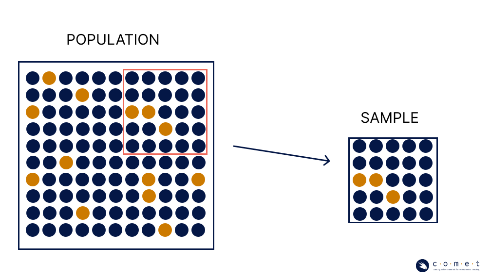
The above statistic is given as a proportion, and expresses the share of an outcome of a variable in relation to the whole. We formally use to denote a proportion when we’re talking about a proportion of the population, and when we’re talking about the proportion of a sample. We can calculate proportions using:
Where is the number of ‘successes’ for the proportion of interest (in our case, how many people said that they are concerned about BC’s salmon stocks) and is the total number of observations in the dataset (how many people were surveyed).
Note: When we talk, we would normally describe proportions using percentages. People frequently say things like “we’ve completed 60% of our tasks”, or “12% of our clients were unsatisfied with their service”, as this helps when communicating mathematical information verbally. When writing things formally in statistics, however, we use decimal points to convey the same information. For example, 60% becomes 0.6, and 12% becomes 0.12.
Suppose we want to better understand the reasons that the entire population of BC residents harbours concerns for salmon stocks. To determine this, we poll 100 randomly selected British Columbians and arrive at the following dataset:
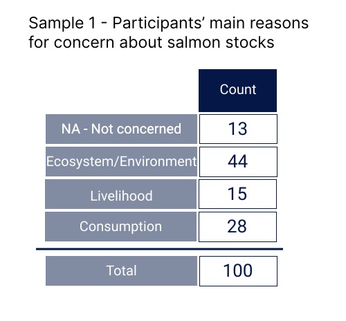
Question 20: What is the proportion of this sample who are concerned about salmon stocks for reasons related to ecosystem health? Please provide your answer as a decimal value (e.g. 50% = 0.5).
answer_20 <- # your answer here
test_20()Because we used a sample to arrive at this number and not the entire population, this calculation is only a point estimate of the population parameter, meaning it’s out best guess at a single value. Say we repeat this poll on a new group of British Columbians, and obtain the following dataset:
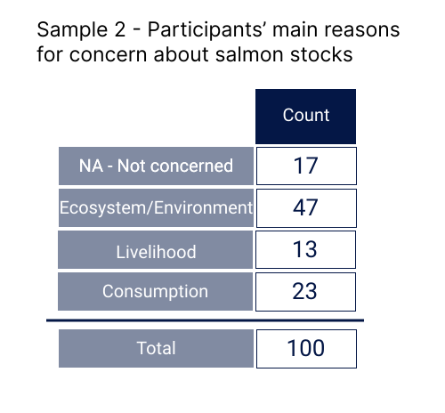
Question 21: What is the proportion of this sample who are concerned about salmon stocks for reasons related to ecosystem health? Please provide your answer as a decimal value (e.g. 50% = 0.5).
answer_21 <- # your answer here
test_21()As you probably expected, these point estimates are not the same due to sampling variability, or sample-to-sample differences. This kind of variability is both common and expected when collecting data.
So, if there’s variability in our point estimates, how can we ever know the population parameter? In truth, there will always be uncertainty in statistics, and we can only ever use estimates; however, statistical analysis provides us with methods to make these estimates robust.
Let’s take another three samples and see what we have.
| Sample | Proportion |
|---|---|
| 1 | 0.44 |
| 2 | 0.47 |
| 3 | 0.47 |
| 4 | 0.39 |
| 5 | 0.45 |
We can display these results as a histogram to better understand them.
histogram_5_samples #run this cell to view the our five_sample_histogramSuppose we kept repeated this with new samples asking this same question, and continued calculating this proportion. The results are displayed below.
View(sample_data) ## run this cell to view the datasetNow change the histogram to add more lines of data to the histogram in increments of ten in the indicated place below (“change me”), until you’ve included all 100 observations. Re-run the whole cell after every addition to see how adding more samples changes the histogram.
histogram_100_samples <- ggplot(data = sample_data[1:100 #(change me --> 1:10, 1:20, 1:30... etc.)!
,], aes(x = Proportion)) +
geom_histogram(fill = "dodgerblue3", color = "lightgrey", bins = 8) +
labs(x = "Sample proportions", y = "Count", main = "Histogram: 100 Samples") +
theme(
axis.title = element_text(size = 24),
axis.text = element_text(size = 22))
histogram_100_samplesNotice how the shape of the histogram changes? With this larger set of data, it looks far more symmetrical, with a single peak close to 0.5. This bell-curve shaped is called a normal distribution of data.
If we were to continue polling until we included all possible samples of a given size (), we would see it become even more symmetrical, and centered perfectly on , the true proportion of BC residents who are concerned about salmon stocks for reasons primarily related to environmental or ecosystem health. This is a mathematically proven concept which is fundamental to inferential statistics.
Knowing that this is the case does not necessarily mean that the proportion we calculate from our sample will always be very close to the true parameter of the population. Sampled values have the potential to actually be quite different from their corresponding parameters.
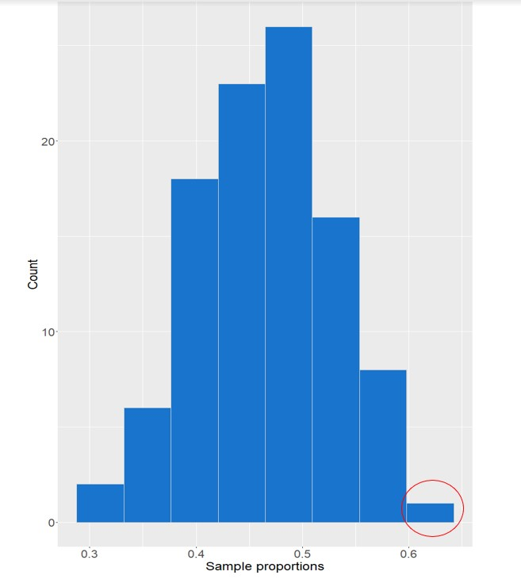
Nevertheless, knowing how these values are distributed around the population parameter allows us to make strong conclusions about how accurate our statistics are. Our sample statistic could be very different from the true value of . But is it likely? How likely? Conversely, what is the likelihood that it is very close? With enough information about our sample, these questions can be answered through calculation!
This is because statistics is directly connected to probability. Statistical inference is based on understanding the probability that with any given sample size, (), the true characteristic of the population ( or ) will fall a certain distance from the sampled value ( or ).
Conclusion
As you can see, the world of probability and statistics is incredibly fascinating, with so many important applications. In this notebook, we learned about probability, counting, data, and statistics using the state of BC salmon as a case study to provide insight into how these skills can be used to understand natural resource management and ecological conservation efforts. The importance of salmon to many people who call our province home means that it is critical to continue to use data and statistics to thoughtfully address the threats and opportunities for the future of salmon in BC.
After having completed this introductory course, you should have a solid foundation of knowledge about the relationships between probability, statistics, and data, and some of the applications of these concepts in the world around us.
Footnotes
Sometimes also called the empirical probability↩︎